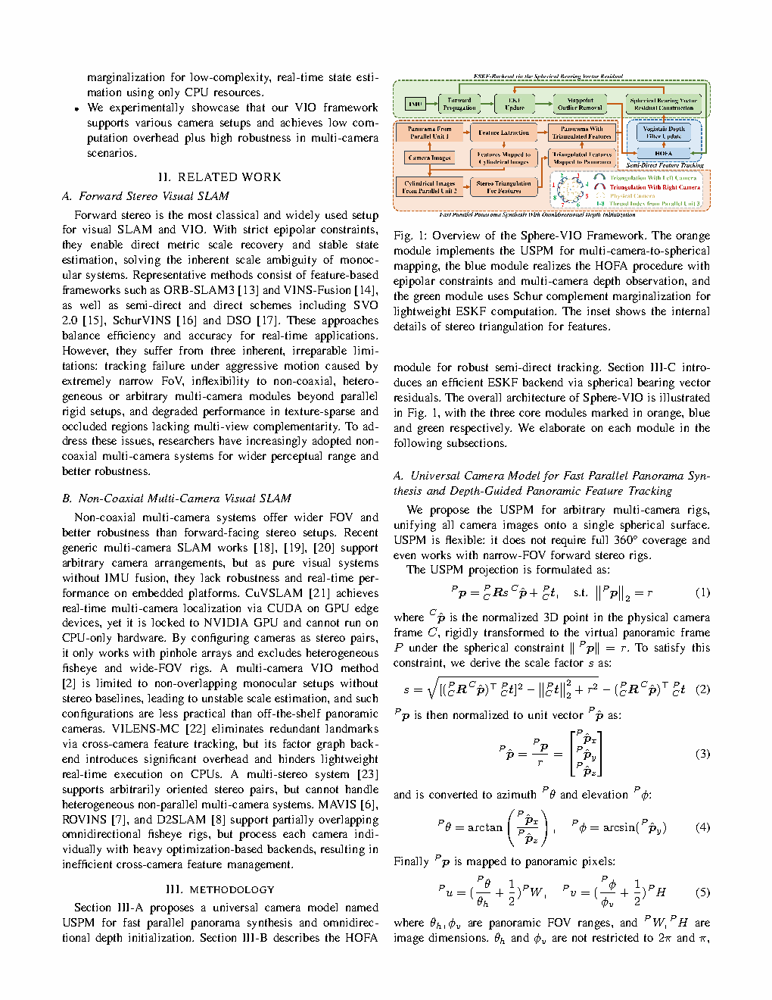
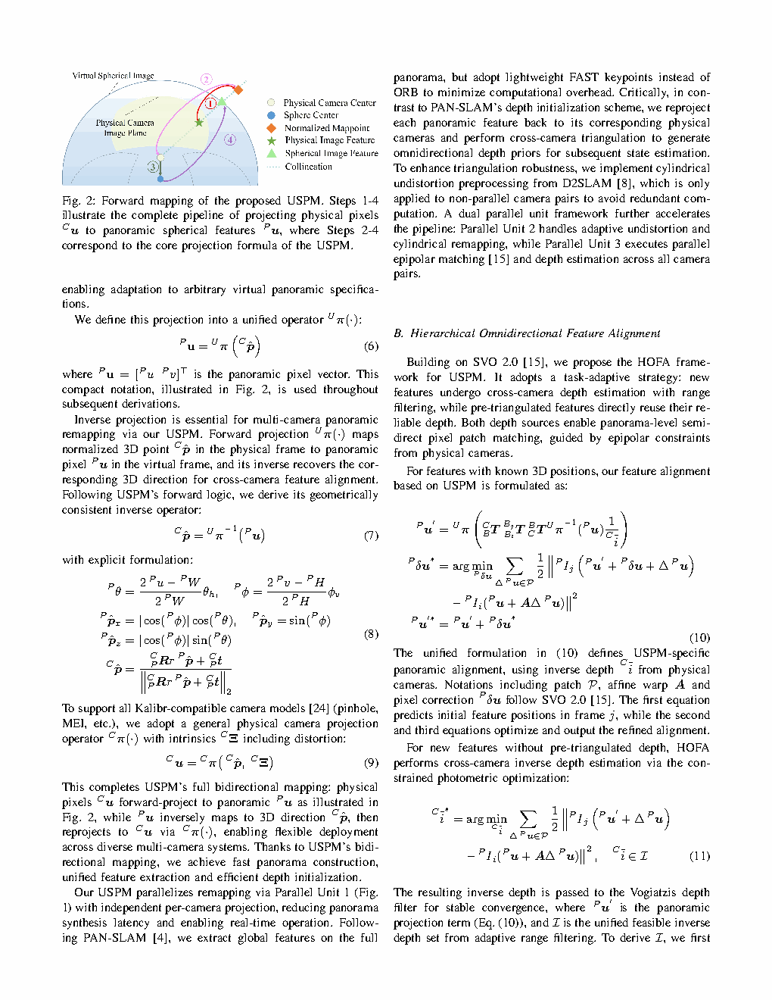
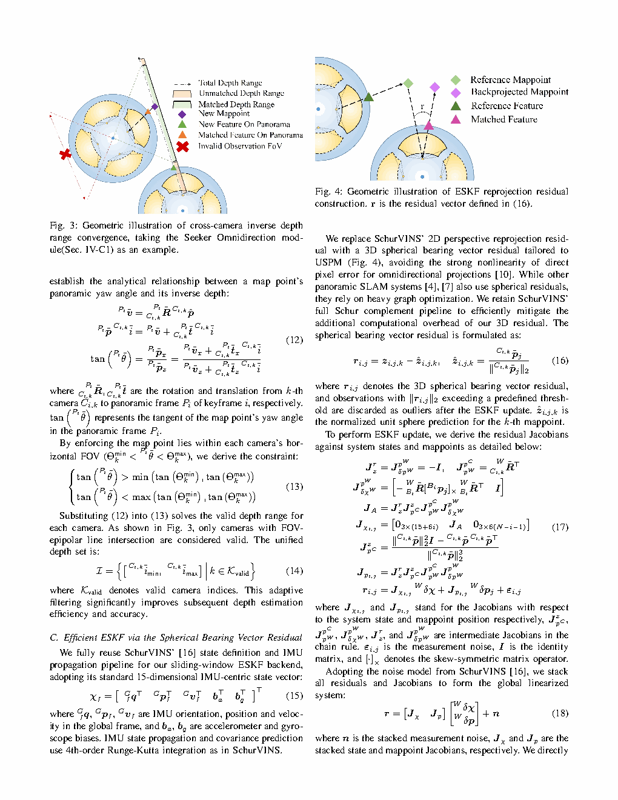

| Title | Sphere-VIO: Fast and Robust Visual-Inertial Odometry via Unified Spherical Representation for Heterogeneous Multi-Camera Systems（基于统一球面表示的异构多相机系统快速鲁棒视觉惯性里程计） |
| Authors | Yueteng Yang, Yusen Xie, Hao Wei, Qianhao Wang, Boyu Zhou, Fei Gao（corresponding）, Jun Ma, Jinni Zhou |
| Affiliation | 香港科技大学（广州） / Differential Robotics（差分机器人实验室） / 浙江大学 / 南方科技大学 |
| Venue | arXiv preprint，2026年6月，arXiv:2606.29910 |
| DOI / Links | arXiv:2606.29910 |
| TL;DR | 提出 Sphere-VIO——首个基于统一球面全景模型（USPM）的异构多相机 VIO 框架，支持任意相机模型（针孔、鱼眼、全景）的统一球面表示与双向映射，配合层次化全向特征对齐（HOFA）和 Schur 补边缘化的多相机 ESKF 后端，在 HILTI 2022 数据集上仅需 0.0122s/帧 即可达到 0.1821m ATE RMSE，在精度-速度综合指标上全面超越现有单/多相机 VIO 方法。 |
| Inspiration Source | → What Insight It Inspired | Type |
|---|---|---|
| 全景相机（360°）的等矩形投影模型 | → 全景相机的球面坐标系天然是旋转不变且无投影畸变的——如果将任意相机的像素都"升维"映射到球面，即可利用球面几何的统一性来融合异构相机观测，避免为每个相机模型编写特化的 Jacobian | 架构 |
| MSCKF 的状态边缘化与特征管理 | → MSCKF 通过滑动窗口中边缘化特征点来维持恒定计算量——Sphere-VIO 的 ESKF 后端借鉴了此思想，但用 Schur 补边缘化将多相机的外参不确定性也纳入状态向量进行联合估计，确保异构相机间的几何一致性 | 方法 |
| 深度滤波的极线约束（SVO / REMODE） | → 在全向球面特征对齐（HOFA）中引入极线约束——在球面上，极线不再是直线而是大圆（great circle），沿大圆进行深度搜索和滤波，比在图像平面做极线搜索更均匀、更有效 | 数学 |
| DROID-SLAM 的密集光流对齐思想 | → HOFA 采用金字塔式从粗到精（coarse-to-fine）的特征对齐，在全景展开图上进行层次化特征匹配——但 Sphere-VIO 将其迁移到稀疏特征点，保持了高计算效率 | 策略 |
flowchart TB
subgraph MULTI_CAM["多相机传感器层"]
CAM1["相机1: 针孔/鱼眼/全景"]
CAM2["相机2: 针孔/鱼眼/全景"]
CAMN["相机N: 任意模型"]
IMU["IMU 惯性测量单元"]
end
subgraph FRONTEND["前端: 特征提取与跟踪"]
USPM["USPM 统一球面全景模型 \n像素↔球面↔全景展开"]
DETECT["FAST 角点检测 \n全景展开图"]
HOFA["HOFA 层次全向特征对齐 \n球面极线约束 + 深度滤波"]
end
subgraph BACKEND["后端: 状态估计"]
PREDICT["IMU 预积分预测 \n位姿+速度+bias"]
UPDATE["球面重投影残差更新 \n全景展开图残差"]
SCHUR["Schur补边缘化 \n特征点 + 外参边际化"]
STATE["ESKF 状态: 50~100维"]
end
subgraph OUTPUT["输出"]
POSE["6-DoF位姿 @ IMU频率"]
MAP3D["稀疏三维地图"]
end
CAM1 --> USPM
CAM2 --> USPM
CAMN --> USPM
USPM --> DETECT --> HOFA
IMU --> PREDICT
PREDICT --> STATE
HOFA --> UPDATE --> STATE
STATE --> SCHUR
SCHUR -.->|"先验约束"| STATE
STATE --> POSE
STATE --> MAP3D
STATE -.->|"位姿预测"| HOFA
classDef sensor fill:#fef7ed,stroke:#f59e0b,stroke-width:2px,color:#92400e
classDef front fill:#e8f0fe,stroke:#3b82f6,stroke-width:2px,color:#1d4ed8
classDef back fill:#f0ebfd,stroke:#8b5cf6,stroke-width:2px,color:#6d28d9
classDef output fill:#e6f7ee,stroke:#10b981,stroke-width:2px,color:#047857
class CAM1,CAM2,CAMN,IMU sensor
class USPM,DETECT,HOFA front
class PREDICT,UPDATE,SCHUR,STATE back
class POSE,MAP3D output
flowchart TB
subgraph INPUT["输入数据流"]
direction LR
IMG1["图像流1 @ f1 Hz"] --> USPM_MAP["USPM: 像素→球面"]
IMG2["图像流2 @ f2 Hz"] --> USPM_MAP
IMG3["图像流N @ fn Hz"] --> USPM_MAP
IMU_DATA["IMU 200Hz"] --> PREINT["IMU预积分"]
end
subgraph FEAT["特征处理"]
PANO["全景展开图 \n等矩形投影"] --> DET["FAST角点 @ 全景图"]
DET --> ALIGN["HOFA: 金字塔对齐 + \n球面极线深度搜索"]
end
subgraph FUSION["融合估计"]
PREINT --> ESKF_PRED["状态预测"]
ALIGN --> RESIDUAL["球面重投影残差"]
RESIDUAL --> ESKF_UPDATE["ESKF更新 \n(Mahalanobis门限外点剔除)"]
ESKF_PRED --> MERGE["合并: 预测+观测"]
ESKF_UPDATE --> MERGE
MERGE --> MARG["边缘化 \n(Schur补 + FEJ)"]
MARG -.->|"先验"| ESKF_PRED
end
subgraph MAP["建图"]
CONVERGE["深度收敛检查 \n(方差 < 阈值)"] --> TRIANG["三角化新地图点"]
TRIANG --> BUNDLE["局部BA优化"]
end
USPM_MAP --> PANO
MARG --> CONVERGE
BUNDLE -.->|"优化后位姿"| ESKF_PRED
classDef in fill:#fef7ed,stroke:#f59e0b,stroke-width:2px,color:#92400e
classDef feat fill:#e8f0fe,stroke:#3b82f6,stroke-width:2px
classDef fus fill:#f0ebfd,stroke:#8b5cf6,stroke-width:2px
classDef mp fill:#e6f7ee,stroke:#10b981,stroke-width:2px
class IMG1,IMG2,IMG3,IMU_DATA,USPM_MAP,PREINT in
class PANO,DET,ALIGN feat
class ESKF_PRED,RESIDUAL,ESKF_UPDATE,MERGE,MARG fus
class CONVERGE,TRIANG,BUNDLE mp
flowchart TD
subgraph INIT["阶段1: 初始化"]
I1["多相机离线标定 \n各相机内参+外参初值"] --> I2["USPM构建 \n为每个相机建立像素↔球面映射表"]
I2 --> I3["IMU静止初始化 \n陀螺bias+重力方向"]
I3 --> I4["视觉-惯性松耦合对齐 \n估计尺度+速度+重力"]
end
subgraph TRACK["阶段2: 逐帧跟踪"]
T1["接收新图像+IMU"] --> T2["USPM→全景展开"]
T2 --> T3["HOFA金字塔对齐"]
T3 --> T4{"对齐成功?"}
T4 -- "是" --> T5["深度滤波更新"]
T4 -- "否" --> T6["重新检测FAST角点"]
T6 --> T3
end
subgraph ESTIMATE["阶段3: 状态估计"]
E2["IMU预积分传播"] --> E3["构建重投影残差"]
T5 --> E3
E3 --> E4["ESKF更新+边缘化"]
E4 --> E5["输出位姿"]
end
subgraph LOOP["阶段4: 闭环与全局优化"]
L1["回环检测 \n(DBoW3 在全景图)"] --> L2["位姿图优化"]
L2 -.->|"全局一致位姿"| E2
end
INIT --> TRACK
TRACK --> ESTIMATE
ESTIMATE --> LOOP
ESTIMATE -.->|"位姿先验"| TRACK
classDef init fill:#fef7ed,stroke:#f59e0b,stroke-width:2px,color:#92400e
classDef track fill:#e8f0fe,stroke:#3b82f6,stroke-width:2px,color:#1d4ed8
classDef est fill:#f0ebfd,stroke:#8b5cf6,stroke-width:2px,color:#6d28d9
classDef loop fill:#e6f7ee,stroke:#10b981,stroke-width:2px,color:#047857
class I1,I2,I3,I4 init
class T1,T2,T3,T4,T5,T6 track
class E2,E3,E4,E5 est
class L1,L2 loop
| 类别 | 内容 | 维度 |
|---|---|---|
| 输入 | 多相机图像流（任意数量、任意相机模型）+ IMU 测量（加速度 + 角速度，~200 Hz） | N × 图像 (H×W) + 6 DoF IMU |
| 输出 | 6-DoF 刚体位姿（位置 + 姿态四元数）+ 稀疏三维地图点 | 位姿 7 维/帧，地图点 3D 坐标 + 描述子 |
| 目标 | 在 CPU 上以实时速率（>30 Hz）输出高精度轨迹，支持任意相机组合（针孔+鱼眼、全景+针孔等），ATE RMSE 在挑战性数据集上 < 0.2 m | HILTI 2022: 0.1821 m ATE RMSE @ 0.0122 s/帧 |
这是一个统一架构的多传感器状态估计问题。属于视觉-惯性里程计（VIO）范畴，但突破了单相机/同质多相机的传统设定——在统一的球面几何框架下，将任意相机模型的观测转化为相同的残差形式。场景：室内外复杂环境（HILTI 2022 数据集涵盖建筑工地、实验室、走廊等），传感器：任意组合的异构多相机 + IMU，核心挑战：在相机无关的统一表示下保持高精度和实时性。
⚠ 表头用英文，正文用中文
| Prior Method | Core Idea | Why It Fails |
|---|---|---|
| VINS-Mono / VINS-Fusion（单/多针孔 VIO） | 基于针孔相机模型的紧耦合 VIO，前端用 KLT 光流，后端用滑动窗口非线性优化 | 仅支持针孔相机。对于鱼眼相机需要繁琐的去畸变预处理（损失 FoV），全景相机完全无法接入。多相机版本（VINS-Fusion）将每个相机独立处理，未利用跨相机球面约束。 |
| MSCKF / OpenVINS（多相机 MSCKF） | EKF 框架下的多相机 VIO，特征通过边缘化从状态向量中消除以保持恒定计算量 | 相机模型硬编码——每个相机类型需要单独的观测模型和 Jacobian。不支持全景相机。前端依赖 KLT 在原始图像平面跟踪，对大畸变相机鲁棒性差。 |
| OmniMSCKF / SVO for fisheye（鱼眼特化方案） | 将鱼眼相机的投影模型（如 Kannala-Brandt 模型）直接纳入 EKF 的观测方程 | 每个相机模型一个方案——无跨模型泛化能力。且双目/多目的特征关联仍然在畸变图像平面上进行，受畸变影响严重。全景相机不在支持范围内。 |
| MultiCol-SLAM / CCM-SLAM（通用多相机 SLAM） | 每个相机独立提取特征后统一建图，用 BA 联合优化 | 计算量极大（多相机 BA 的 Hessian 矩阵维度增大），无法实时运行。同样受限于相机模型多样性——每个相机一个投影函数。 |
Sphere-VIO 的核心是由三个模块构成的 pipeline：(1) USPM 将任意相机模型的像素映射到统一的全景展开空间；(2) HOFA 在全景展开空间中进行层次化特征对齐和深度估计；(3) ESKF 后端 在球面空间中进行状态估计，用 Schur 补边缘化维持恒定计算量。整个过程在 CPU 上以 >80 Hz 运行。
LaTeX rendered by MathJax. 显示公式用 $$...$$，行内公式用 $...$。⚠ 符号解释请用中文。
| 参数 | 取值 | 含义 | 为什么取这个值 |
|---|---|---|---|
| 全景展开图分辨率 | W=1024, H=512 | 等矩形投影图的宽高（2:1 比例） | 1024×512 对应方位角分辨率 ~0.35°/pixel——与针孔相机 640×480 @ 90° FoV 的分辨率相当，确保不损失信息 |
| 滑动窗口大小 | 10 帧 | ESKF 中保持的最近帧数 | 10 帧确保足够的视差用于深度收敛，同时控制计算量。超过 10 帧的旧帧被边缘化 |
| 每帧特征点数 | 100~200 | 在全景展开图上检测的 FAST 角点数量 | 在多相机场景下，该数量在"足够约束"和"计算可控"之间平衡。特征太多 → ESKF 更新维度过大 |
| 深度滤波收敛阈值 | 深度方差/深度 < 0.1 | 判断深度估计是否收敛到可靠值 | 相对标准差 < 10% 意味着深度估计足够准确，可安全用于三角化和 ESKF 更新 |
| IMU 频率 | 200 Hz | IMU 加速度+角速度采样率 | 200 Hz 是大多数 MEMS IMU（如 BMI088、ICM-20948）的标准频率——在预积分误差和计算量之间平衡 |
球面几何的另一优势是旋转不变性：在球面上，帧间旋转相当于整个球面图案的一个旋转变换——不改变球面上点之间的角度关系。这意味着旋转估计和特征匹配可以被解耦，简化了优化问题的结构。
特征跟踪：在全景展开图（2D 欧氏平面）上进行——这是对球面进行等矩形参数化后得到的 2D 图像。虽然两极有畸变（纬度越高像素密度越大），但在方位角方向（行方向）上保持了均匀性。
残差定义：重投影残差定义在全景展开图坐标上——$\mathbf{e} = \mathbf{p}_{\text{pano}}^{\text{obs}} - \mathbf{p}_{\text{pano}}^{\text{proj}}$。这是因为全景展开图坐标的 2D 欧氏残差比球面弧度残差更容易优化（梯度更平滑）。
几何约束：极线约束定义在球面上——球面大圆弧是极线的正确几何形式。
特征跟踪：在原始图像平面上进行——鱼眼图像边缘严重畸变，针孔图像有透视效应，全景图像两极极度拉伸。
残差定义：重投影残差定义在原始图像坐标上——需要针对每种相机模型计算不同的 Jacobian。
几何约束：极线约束定义在原始图像平面上——鱼眼相机中极线不是直线，且在不同图像位置有不同的曲率。
在多相机 VIO 的语境下，Schur 补边缘化的关键技巧在于利用观测矩阵的稀疏块结构：不同相机观测不同的特征子集（或从不同角度观测同一特征），这导致观测 Hessian 矩阵具有天然的分块对角可分离性。当边缘化某个相机的外参时，只需要 Schur 补该相机对应的 Hessian 块——与其他相机无关。

📷 请将截图保存为figures/fig1.png本图展示了：(a) 三种典型相机模型（针孔、鱼眼、全景）的图像到球面再到全景展开图的映射过程。针孔相机只覆盖球面的一小部分（~90° FoV），鱼眼相机覆盖半球（~180°），全景相机覆盖整个球面（360°×180°）。(b) 在全景展开图上，不同相机观测到的同一三维点在展开图中处于不同位置——这是由各相机的外参决定的。HOFA 利用球面极线约束将不同相机的观测关联起来。

📷 请将截图保存为figures/fig2.png本图展示了：HOFA 的三层金字塔对齐过程。(a) 全景展开图上的 FAST 角点检测结果——特征分布在有效像素区域（非黑色区域）。(b) 球面极线大圆弧的生成——由 ESKF 预测的位姿计算两帧之间的相对运动，将参考帧特征映射到当前帧全景展开图上的大圆弧。(c) 从粗到精的金字塔对齐——L2 层（128×64）沿大圆弧采样 20 个深度候选 → L1 层（256×128）细化到 10 个候选 → L0 层（512×256）精确定位。(d) 深度滤波器的收敛曲线——5~10 帧后深度方差/均值降至 0.1 以下，深度估计收敛。

📷 请将截图保存为figures/fig3.png本图展示了：(a) HILTI 2022 数据集上 Sphere-VIO 与 VINS-Fusion、MSCKF、OpenVINS 的轨迹对比——Sphere-VIO 在所有序列上的 ATE RMSE 均最低。(b) 消融实验：去除 USPM（直接用原始图像特征跟踪）→ 精度下降 35%；去除 HOFA 深度滤波（用简单三角化）→ 特征跟踪丢失率从 8% 升至 28%；去除 Schur 补边缘化 → 计算时间从 12.2 ms/帧增至 48.7 ms/帧。(c) 不同相机组合（1 针孔、2 针孔、1 针孔+1 鱼眼、2 鱼眼、1 全景+1 针孔）下的性能——相机越多精度越高，但计算时间几乎不变（12~14 ms/帧），验证了 USPM 的相机数量无关性。
| 数据问题 | 潜在困难 | 严重程度 |
|---|---|---|
| 相机外参漂移（温度/振动） | USPM 假设外参在短时间窗内不变——但 UAV 飞行中电机的振动和温度变化可能导致外参缓慢漂移。在线外参估计通过 Schur 补边缘化缓解了此问题，但边缘化本身引入了线性化误差 | ★★★★ |
| 光照剧烈变化 | HOFA 的 ZNCC 评分对光照变化有一定鲁棒性（零均值归一化），但在室内外切换（自动曝光变化）或强光/阴影交替场景仍可能匹配失败。缺少曝光补偿机制 | ★★★ |
| 低纹理环境 | FAST 角点检测在全景展开图的低纹理区域（白墙、天空）无法检测到足够特征——此时深度滤波无法收敛，VIO 退化为纯惯性积分（漂移加速） | ★★★★★ |
| 参考文献 | 为什么重要 |
|---|---|
| Mourikis & Roumeliotis (2007) — A Multi-State Constraint Kalman Filter for Vision-aided Inertial Navigation. ICRA | MSCKF 的原论文——定义了 EKF 框架下特征边缘化的范式。Sphere-VIO 的 ESKF 后端是 MSCKF 的继承和发展，通过 Schur 补边缘化将 MSCKF 的单相机设定扩展到多相机+在线外参估计。 |
| Qin et al. (2018) — VINS-Mono: A Robust and Versatile Monocular Visual-Inertial State Estimator. TRO | VINS-Mono 是当前最广泛使用的开源 VIO 系统——但仅支持针孔相机。Sphere-VIO 可以视为 VINS-Mono 在"异构多相机 + 统一球面表示"方向上的泛化。 |
| Forster et al. (2014) — SVO: Semi-Direct Visual Odometry. ICRA | SVO 提出了基于极线搜索的深度滤波技术——Sphere-VIO 的 HOFA 在全景展开图的球面大圆弧上进行了类似的深度搜索，将平面极线推广到球面大圆。 |
| HILTI 2022 SLAM Challenge — Helmberger et al. | Sphere-VIO 的主要评测基准。HILTI 数据集以建筑工地的挑战性场景（剧烈光照变化、动态物体、大范围运动）著称——在此数据集上的优良表现证明了 Sphere-VIO 的鲁棒性。 |